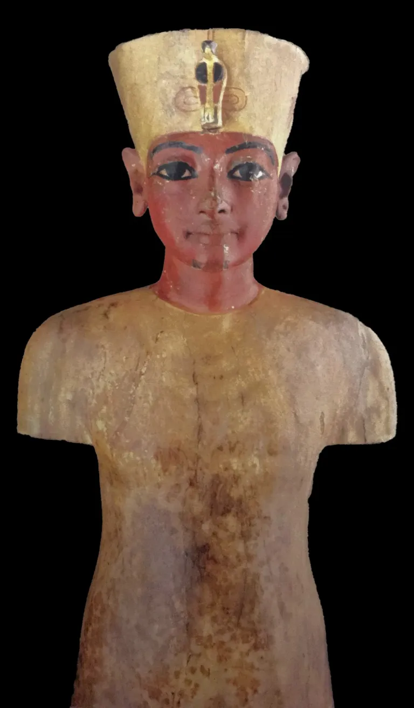
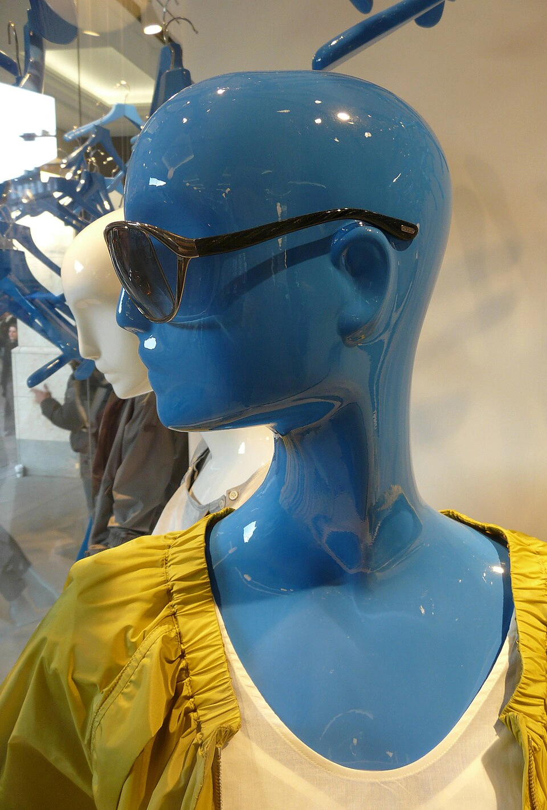
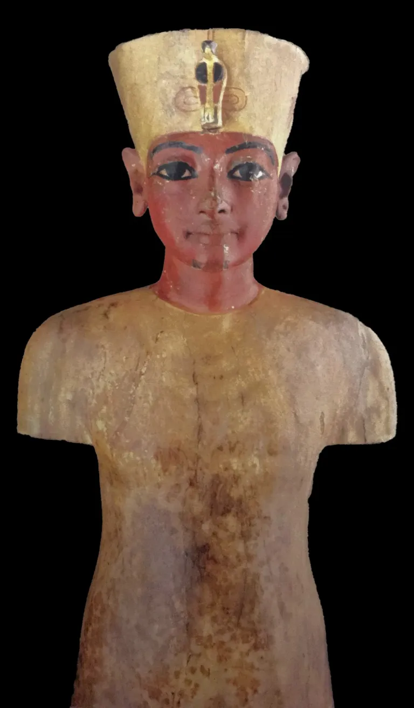
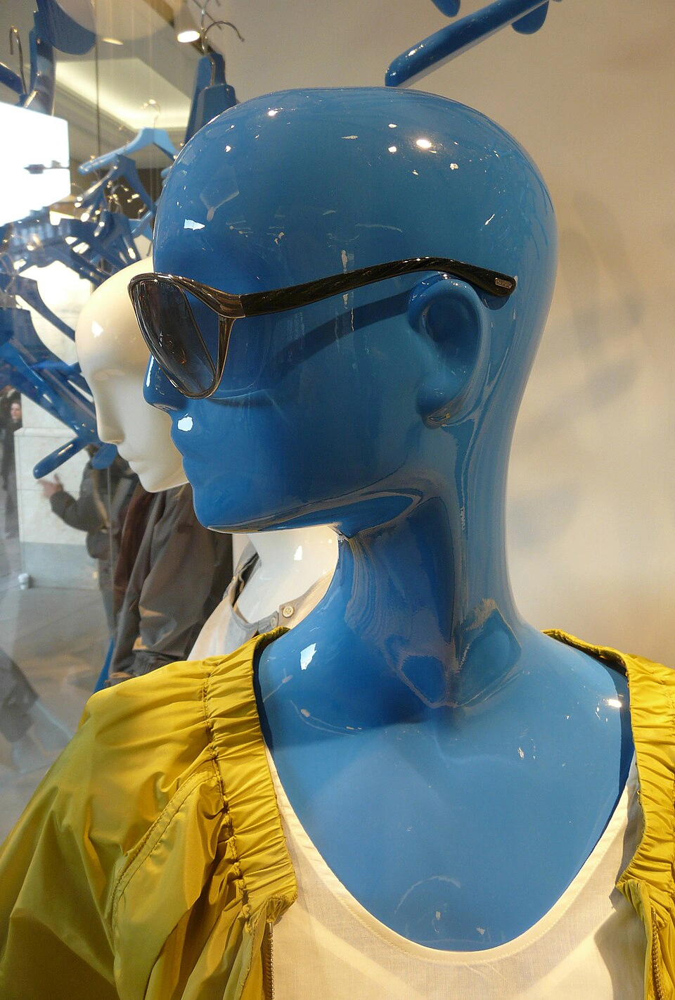
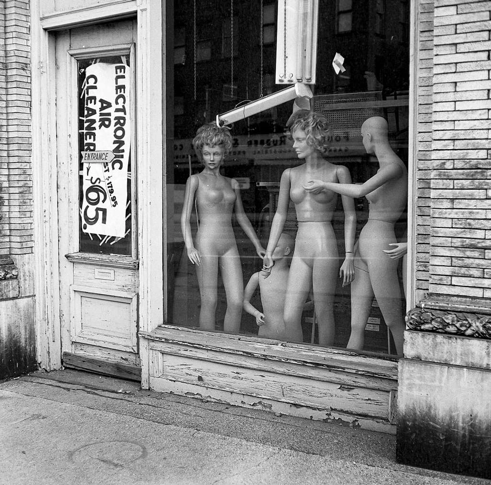
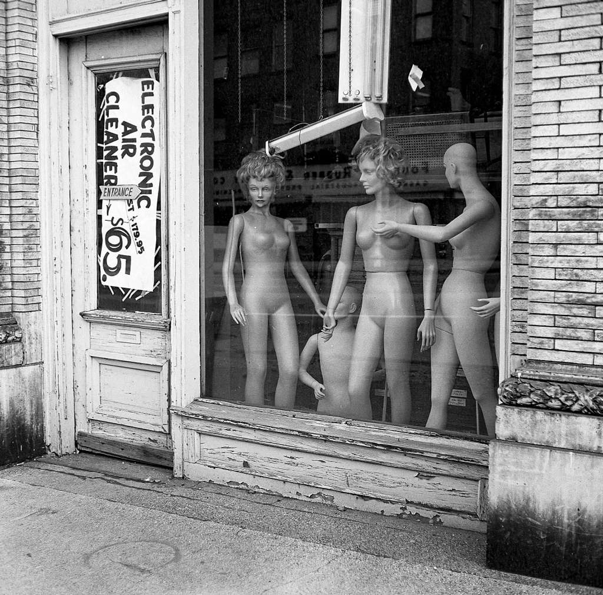

The Rise of Ghost Mannequin Photography in E-commerce
With the rapid expansion of online shopping in the 2000s, visual clarity became essential. Customers could no longer touch fabrics, examine stitching, or assess garment weight in person. Images had to communicate fit, texture, construction, and quality — instantly.
This demand led to the rise of ghost mannequin photography, also known as the invisible mannequin effect.
What Is Ghost Mannequin and How It Works
A ghost mannequin is a specially engineered display form with removable sections. Photographers shoot the garment on the mannequin, capture additional interior details (sleeves, neck, back) separately, and then digitally remove the mannequin in post-production. The final result is a clean “floating garment” image that preserves realistic structure and 3D shape without any visual distraction.
For fashion e-commerce, this method delivers:
- Perfect catalog consistency
- Highlighting of authentic fabric texture
- Realistic garment shape and drape
- Higher buyer confidence and lower return rates
For retouchers, it demands advanced compositing, precise neckline reconstruction, shadow rebuilding, and meticulous texture preservation. It is not simple background removal — it is technical reconstruction of depth, volume, and realism.
AI, Virtual Models, and the Changing Landscape
Today, AI tools can generate virtual fashion models and fully synthetic clothing visuals. Some platforms simulate garments entirely through 3D rendering — no physical photoshoot required.
While AI offers speed and cost savings, it still struggles in 2026 with:
- Accurate fabric rendering and micro-textures
- Natural weight, fold behavior, and realistic drape
- Subtle light diffusion and highlight authenticity
- True-to-life color accuracy across different materials
In fashion retail, even minor visual inconsistencies erode trust. Online buyers demand authenticity — especially for high-value purchases.
Technology evolves quickly, but tactile realism remains irreplaceable.
Why Real Photography + Expert Manual Retouching Still Wins
Professional product photography captures genuine light interacting with real textiles. Cotton diffuses light softly. Silk creates sharp highlights. Wool absorbs brightness differently than satin. These subtle characteristics define how a garment “feels” visually.
High-end manual retouching enhances — rather than flattens — these details. It preserves:
- Fabric grain and weave
- Sharp stitch definition
- Natural, believable drape
- Accurate, brand-true color balance
Over-automated or heavy AI processing often produces artificial smoothness and plastic-like surfaces. Only skilled, human-led retouching maintains realism — and realism builds lasting customer trust.
For fashion brands: trust = fewer returns + higher conversions + better reviews.
Which Mannequins Work Best?
Different goals require different mannequin types:
- Full-body realistic mannequins — ideal for retail storytelling and lifestyle branding
- Minimalist headless mannequins — clean, modern catalog presentation
- Ghost mannequins — optimized for e-commerce clarity, fit visualization, and maximum conversion
- Adjustable dress forms — essential for tailoring, sampling, and garment development
For online fashion stores in 2026, ghost mannequins still offer the strongest balance of structure, realism, and simplicity.
The Evolution of the Mannequin: From Craft Tool to Digital Asset
Early Origins
Ancient civilizations used small articulated figures to display garments and jewelry. These were practical tools for tailors and artisans rather than marketing devices.
Middle Ages and Renaissance
European dressmakers used fashion dolls and early dress forms to present designs to wealthy clients. Mannequins served as instruments of craftsmanship.
19th–20th Century: Retail and Visual Identity
With the rise of department stores in the 19th century, mannequins became central to visual merchandising. Materials evolved from carved wood and wax to plaster, then fiberglass. Poses grew more dynamic, reflecting changing cultural ideals of beauty and movement.
In the early 20th century, fashion advertising and catalog photography integrated mannequins into studio workflows for consistency and styling control.
Modern Mannequin Manufacturing Trends
Today’s mannequins are precision-engineered for both aesthetics and production efficiency:
- Lightweight fiberglass and recyclable materials
- Modular, removable parts designed for ghost photography
- Magnetic neck and arm systems for fast changes
- Matte finishes to minimize studio reflections
- Eco-conscious biodegradable options
- Abstract, gender-neutral designs supporting inclusive branding
Manufacturers now create mannequins specifically optimized for lighting, post-production, and digital compositing workflows.
A Message to Photographers and Retouchers
As AI accelerates automation, technical execution alone is no longer enough. True professionals stand out through deep knowledge of:
- Textile behavior under different lights
- Physics of light and shadow
- Advanced color management and profiling
- Brand psychology and conversion-focused editing
The future of fashion imaging combines powerful technology with irreplaceable craftsmanship. Craftsmanship remains the foundation.
Fashion is tactile.
Your images must communicate that tactility.
Conclusion
From ancient dress forms to invisible digital composites, mannequins have evolved continuously alongside fashion, retail, and visual culture.
In 2026 — the era of AI and automation — real photography combined with professional, texture-preserving retouching remains the most reliable way to deliver authentic fabric feel, precise color, and buyer trust.
In fashion e-commerce, images are not decoration.
They are the product experience.
And experience drives sales.
Have you heard about How Color Directly Influences the Brain and Buying Decisions?
There is an article about this here
Need Professional Ghost Mannequin Retouching?
Get flawless invisible mannequin edits: perfect neck joints, natural shadows, preserved fabric texture.
Boost your conversions and cut returns today.

 



 
